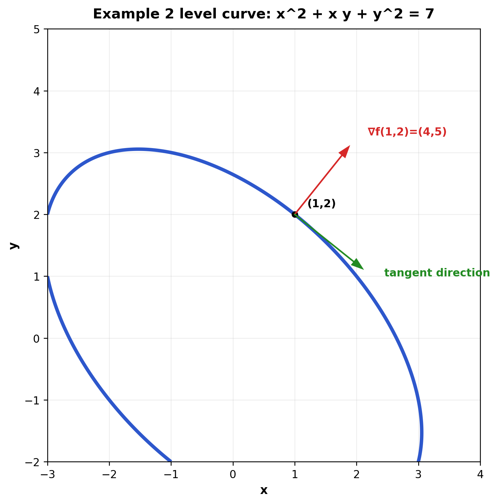
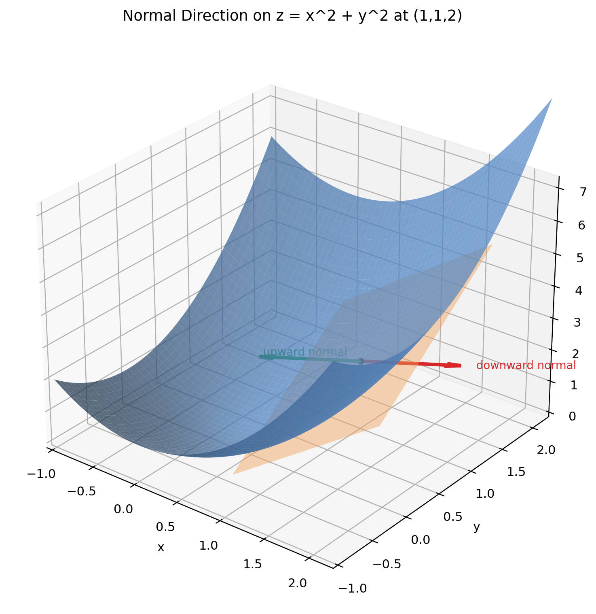
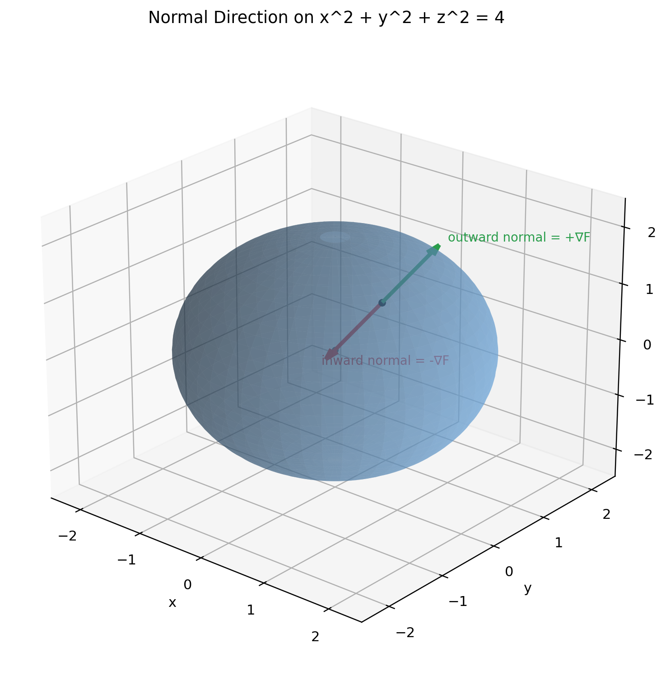

Learning Outcomes
By the end of this lecture, you will be able to:
- Compute directional derivatives and interpret them with the gradient.
- Use tangent-plane linearization and identify normal directions consistently.
- Apply chain rule in one-parameter and multi-parameter settings.
- Interpret and compute Jacobian matrices as local linear maps.
- Classify unconstrained critical points using the second derivative test.
- Solve constrained extrema problems with Lagrange multipliers.
Directional Derivatives and Gradient
Let \(f:\mathbb{R}^2 \to \mathbb{R}\), \(a=(a,b)\), and \(u=(u_1,u_2)\) with \(\|u\|=1\). The directional derivative is
\[ D_u f(a)=\lim_{t\to 0}\frac{f(a+tu)-f(a)}{t}. \]
If \(f\) is differentiable at \(a\), then
\[ D_u f(a)=\nabla f(a)\cdot u. \]
- \(\nabla f(a)\) points to steepest increase.
- Maximum directional derivative is \(\|\nabla f(a)\|\).
- Minimum directional derivative is \(-\|\nabla f(a)\|\).
- If \(u\perp \nabla f(a)\), then \(D_u f(a)=0\).
Pitfall: The direction vector in \(D_u f=\nabla f\cdot u\) must be a unit vector. Normalize first if needed.
Example. For \(f(x,y)=x^2y+y^3\),
\[ \nabla f=(2xy,\,x^2+3y^2),\quad \nabla f(1,1)=(2,4). \]
With \(u=(3/5,4/5)\):
\[ D_u f(1,1)=(2,4)\cdot(3/5,4/5)=22/5. \]
Tangent Plane and Normal Direction
For \(z=f(x,y)\) differentiable at \((a,b)\):
\[ z\approx f(a,b)+f_x(a,b)(x-a)+f_y(a,b)(y-b). \]
For \(F(x,y,z)=f(x,y)-z=0\), a normal vector is
\[ \nabla F(a,b,f(a,b))=(f_x(a,b),f_y(a,b),-1). \]
Both \(n\) and \(-n\) are valid. Choose orientation based on wording such as upward/outward/inward.



Chain Rule in Multivariable Calculus
Case A: One Parameter
If \(x=x(t), y=y(t), z=f(x,y)\), then
\[ \frac{dz}{dt}=f_x\frac{dx}{dt}+f_y\frac{dy}{dt}=\nabla f\cdot (x'(t),y'(t)). \]
Example. \(f(x,y)=x^2y\), \(x=t^2\), \(y=e^t\):
\[ \frac{dz}{dt}=(4t^3+t^4)e^t. \]
Case B: Two Parameters
If \(x=x(s,t), y=y(s,t), w=f(x,y)\), then
\[ \frac{\partial w}{\partial s}=f_x\frac{\partial x}{\partial s}+f_y\frac{\partial y}{\partial s}, \qquad \frac{\partial w}{\partial t}=f_x\frac{\partial x}{\partial t}+f_y\frac{\partial y}{\partial t}. \]
Jacobian Matrix and Linearization
For \(F:\mathbb{R}^n\to\mathbb{R}^m\),
\[ J_F(a)=\left[\frac{\partial F_i}{\partial x_j}(a)\right]_{m\times n}. \]
If \(F\) is differentiable at \(a\),
\[ F(a+h)=F(a)+J_F(a)h+o(\|h\|). \]
Example. \(F(x,y)=(x^2-y,xy)\):
\[ J_F(x,y)=\begin{bmatrix}2x & -1\\ y & x\end{bmatrix}, \qquad J_F(1,2)=\begin{bmatrix}2 & -1\\ 2 & 1\end{bmatrix}. \]
Optimization in Two Variables
Critical points satisfy \(\nabla f(a,b)=(0,0)\) (or first partials fail to exist).
Use
\[ A=f_{xx},\;B=f_{xy},\;C=f_{yy},\;D=AC-B^2. \]
- If \(D>0\) and \(A>0\): local minimum.
- If \(D>0\) and \(A<0\): local maximum.
- If \(D<0\): saddle.
- If \(D=0\): inconclusive.
Example. \(f(x,y)=x^3-3x+y^2\). Critical points: \((1,0)\), \((-1,0)\). Classification: \((1,0)\) is local minimum, \((-1,0)\) is saddle.
Lagrange Multipliers
To optimize \(f(x,y)\) under \(g(x,y)=c\), solve
\[ \nabla f=\lambda\nabla g,\qquad g(x,y)=c. \]
Example. Optimize \(f(x,y)=xy\) on \(x^2+y^2=1\):
Max value \(1/2\), min value \(-1/2\), attained at \((\pm 1/\sqrt2,\pm 1/\sqrt2)\) with matching signs for max and opposite signs for min.
Mini Workflow
- Normalize the direction vector for directional derivatives.
- Compute gradient first, then project: \(D_u f=\nabla f\cdot u\).
- For normals, compute a valid normal and choose sign by orientation words.
- For composites, draw dependence and apply chain rule step by step.
- For unconstrained extrema, find critical points then use second derivative test.
- For constraints, solve \(\nabla f=\lambda\nabla g\) with constraint equation.
Practice Set
- \(f(x,y)=x^2+2xy-y^2\). Compute \(D_u f(1,-1)\) for \(u=(1/\sqrt2,1/\sqrt2)\).
- \(z=x^2+y^2\), \(x=t\cos t\), \(y=t\sin t\). Find \(dz/dt\).
- Find and classify critical points of \(f(x,y)=x^2+y^2-4x+6y\).
- Use Lagrange multipliers for extrema of \(f(x,y)=x+2y\) on \(x^2+y^2=5\).
- \(F(x,y)=(x^2+y, e^{xy})\). Compute \(J_F(0,1)\) and linear approximation near \((0,1)\).
Takeaway: The gradient unifies local change, directional rates, chain rule structure, and optimization with or without constraints.